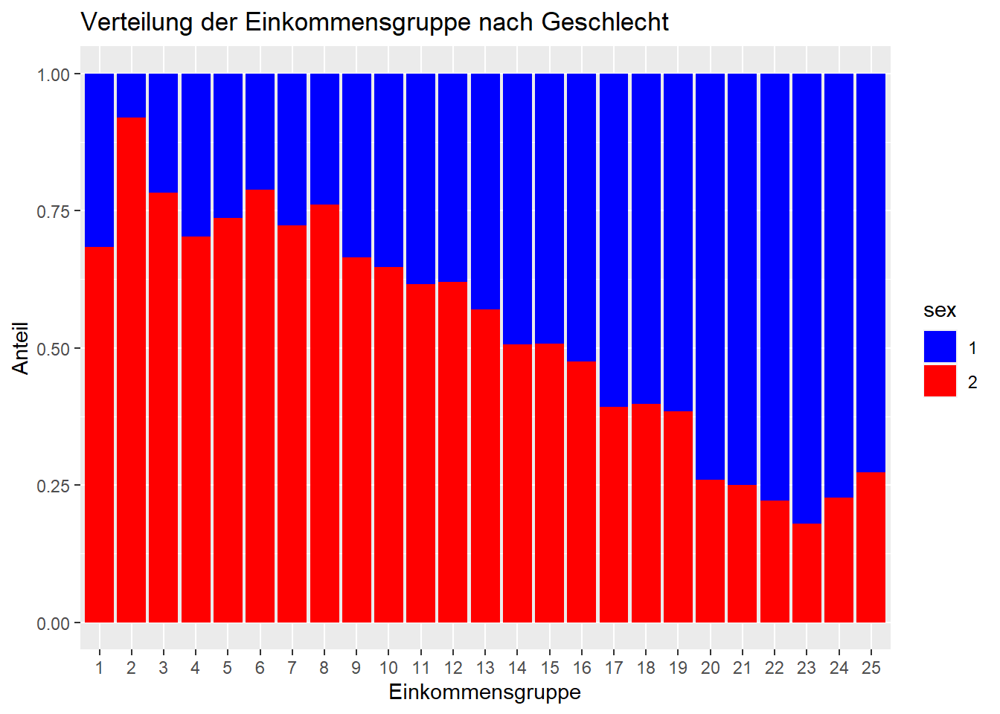

Lade nötiges Paket: pacmanWarning: Paket 'pacman' wurde unter R Version 4.3.1 erstellt[conflicted] Will prefer dplyr::filter over any other package.In diesem Kapitel schauen wir uns verschiedene statistische Verfahren an, um Zusammenhänge zwischen Variablen zu untersuchen. Statistische Verfahren, die den Zusammenhang zwischen Variablen überprüfen, bieten ein großes Aufklärungspotential, Muster, Beziehungen und Trends in Daten zu identifizieren und entsprechende Hypothesen zu testen.
Es gibt verschiedene Arten von Zusammenhängen zwischen Variablen, und je nach Art des Zusammenhangs werden unterschiedliche statistische Verfahren eingesetzt. Die Wahl des jeweils angemessenen Verfahrens hängt von verschiedenen Faktoren ab, vor allem von 1) der Art der untersuchten Variablen und ihres Skalenniveaus (ob es sich also um nominale, ordinale oder metrische Variblen handelt) 2) der Art des (vermuteten) Zusammenhangs (z.B. linear, nicht-linear) sowie 3) den spezifischen Fragestellungen ab, die wir untersuchen wollen. Manchmal kann es sich auch anbieten, verschiedene Verfahren zu kombinieren, um ein umfassendes Verständnis des Zusammenhangs zu erhalten.
Im Fokus dieses Kapitels stehen lineare Zusammenhänge zwischen Variablen verschiedenen Skalenniveaus. Ein linearer Zusammenhang liegt vor, wenn eine konstante Veränderung einer Variable mit einer konstanten Veränderung einer anderen Variable einhergeht.
Ein Beispiel für einen linearen Zusammenhang im Bereich der Mediennutzung könnte der Zusammenhang zwischen der Anzahl der verbrachten Stunden vor dem Fernseher und der Anzahl der Fernsehwerbespots sein, die eine Person pro Tag sieht. Wenn wir annehmen, dass eine Person pro Stunde kontant 10 Werbestpots sieht, hätte sie nach 2 Stunden 20 Werbespots rezipiert, nach 3 Stunden 30 Spots usw. Einen solchen linearen Zusammenhang kann man auch grafisch darstellen: Wenn man Punkte auf einem Streudiagramm zeichnet, dann könnte man eine gerade Linie durch die Punkte legen, und diese Linie würde den Zusammenhang zwischen den Variablen am besten beschreiben.

Im diesem Werbespot-Beispiel vermuten wir einen Zusammenhang zwischen zwei kontinuierlichen bzw. metrischen Variablen. Lineare Zusammenhänge zwischen kontinuierlichen bzw. metrischen Variablen werden oft durch Korrelationskoeffizienten und lineare Regression untersucht.
Häufig gibt es aber auch den Fall, dass man den Zusammenhang zwischen Variablen mit niedrigerem Skalenniveau untersuchen möchte, z.B. zwei nominalskalierten oder ordinalskalierten Variablen. Zur Erinnerung: Nominalskalierte Variablen haben Werte, die Kategorien spiegeln, ohne dass diese eine natürliche Reihenfolge oder direkte Rangordnunghaben haben (z.B. präferierte Mediengattung, Geschlecht, Religionszugehörigkeit). Dagegen weisen die Werte bei ordinalskalierten Variablen eine hierarchische Ordnung oder Rangfolge zwischen den verschiedenen Kategorien auf, wobei die Abstände zwischen den Kategorien nicht fest definiert und auch nicht unbedingt gleichmäßig sind. Typische Beispiele für ordinalskalierte Variablen sind Noten, Bildungsabschlüsse oder Einkommensklassen.
Auf beide Variablentypen sind Methoden, metrische Daten voraussetzen, nicht anwendbar. Daher nutzen wir spezifische Tests: Den Pearson Chi-Quadrat-Test (für nominal- bis ordinalskalierten Variablen) sowie die Rangkorrelation nach Spearman oder Kendall’s Tau (für ordinalskalierte Variablen). Wir starten nun mit dem Pearson Chi-Quadrat-Test:
Der Pearson Chi-Quadrat Test ist ein statistisches Verfahren, das verwendet wird, um zu überprüfen, ob es einen statistisch signifikanten Zusammenhang zwischen zwei nominalskalierten Variablen gibt; er kann auch bei ordinalskalierten Variablen angewendet werden. Der Chi-Quadrat-Tests testet die Nullhypothese, dass die beiden Variablen unabhängig voneinander sind. Mit dem Chi-Quadrat-Test wird dazu der Chi-Quadrat-Wert berechnet, indem die beiden untersuchten Variablen in einer sogenannten “Kreuztabelle” gegenüber gestellt und dann die beobachteten Häufigkeiten mit den erwarteten Häufigkeiten verglichen werden.
Ein Beispiel für eine Zusammenhangshypothese zwischen zwei nominalskalierten Variablen, ist die Annahme, dass es einen Zusammenhang zwischen dem Geschlecht und der Religionszugehörigkeit gibt: Es gibt einen Zusammenhang zwischen dem Geschlecht der Befragten (sex) und der Konfessionszugehörigkeit (rd01). Diese Annahme können wir mit einem Chi-Quadrat-Test überprüfen.
In R kann der Pearson Chi-Quadrat Test mit der Funktion chisq.test() durchgeführt werden. Zuerst müssen wir dazu aber erst einmal die benötigen Pakete und Daten laden…
Lade nötiges Paket: pacmanWarning: Paket 'pacman' wurde unter R Version 4.3.1 erstellt[conflicted] Will prefer dplyr::filter over any other package.Die Variable Konfessionszugehörigkeit ist im Allbus-Datensatz mit dem Namen “rd01” benannt; wie benennen sie in “Konfession” um; außerdem filtern wir die für uns relevanten Fälle der Variablen heraus (und ignorieren damit die irrelevanten Fälle, z.B. -9=Keine Angabe):
Nun erstellen wir eine Kreuztabelle (auch Kontingenztafel genannt), um die Häufigkeiten der verschiedenen Kombinationen von Kategorien beider Variablen anzuzeigen. Das gibt uns einen ersten Überblick darüber, wie oft bestimmte Kombinationen vorkommen.
1 2 3 4 5 6
1 575 53 578 42 49 1241
2 683 59 640 63 48 1123
3 1 0 0 0 0 2[Hier können Sie auch noch einmal nachschauen, wie Kreuztabellen erstellt werden] (LINK)
In der Kreuztabelle können wir keine klare Tendenz erkennen, nach der das Geschlecht Einfluss auf die Konfession zu haben scheint: Frauen und Männer verteilen sich ungefähr gleich zwischen den verschiedenen Konfessionen; insgesamt scheinen allerdings etwas mehr Frauen als Männer überhaupt einer Konfession anzugehören.
Mit einem gestapelten Balkendiagramm können wir diese Tendenz auch visualisieren:
Ein gestapeltes Balkendiagramm ist ein Diagramm, dass die Verteilung von verschiedenen Kategorien innerhalb einer Gesamtheit farblich (nach Kategorien) differenziert darstellen kann. Dazu werden mehrere Balken für jede Kategorie (nach Farbe sortiert) “aufeinandergestapelt”, wobei die Höhe des gesamten Balkens die Gesamtsumme (je Farbkategorie) repräsentiert. Um das auszuführen, müssen wir die unsere Daten wie Faktoren behandeln, weshalb wir den “as.factor”-Befehl nutzen:
library(ggplot2)
daten$Konfession <- as.factor(daten$Konfession)
daten$sex <- as.factor(daten$sex)
ggplot(daten, aes(x = Konfession, fill = sex)) +
geom_bar(position = "fill") +
labs(title = "Verteilung der Konfessionszugehörigkeit nach Geschlecht",
x = "Einkommensgruppe", y = "Anteil") +
scale_fill_manual(values = c("blue", "red", "green")) # Farben anpassen
Diese Visualisierung zeigt sehr schön, was wir auch schon in der Kreuztabelle ablesen konnten: Es gibt keinen deutlich sichtbaren Zusammenhang zwischen der Konfessionszugehörigkeit und dem Geschlecht - allenfalls lässt sich vermuten, dass mehr Frauen als Männer überhaupt einer Konfession angehören. Ob sich der Zusammenhang als statistisch bedeutsam erweist, können wir nun mit dem Chi-Quadrat Test prüfen:
Der Chi-Quadrat Test ist ein statistisches Verfahren, das verwendet wird, um festzustellen, ob es einen signifikanten Unterschied zwischen den beobachteten und erwarteten Häufigkeiten in einer Kreuztabelle gibt. Da wir schon eine Kreuztabelle erstellt haben, können wir die Funktion chisq.test auf unsere Kreuztabelle anwenden - das geht ganz einfach:
Warning in chisq.test(kreuztabelle): Chi-Quadrat-Approximation kann inkorrekt
sein
Pearson's Chi-squared test
data: kreuztabelle
X-squared = 22.946, df = 10, p-value = 0.01095Schauen wir uns nun den R-Output an: Der Chi-Quadrat-Wert (X² oder X-squared) gibt uns an, wie gut die beobachteten Häufigkeiten mit den erwarteten Häufigkeiten übereinstimmen. Ein höherer X²-Wert deutet auf eine größere Abweichung hin.
df zeigt die Anzahl der Freiheitsgrade (Degrees of Freedom) des Chi-Quadrat-Tests an. Sie hängt von der Anzahl der Kategorien in den Variablen ab und beeinflusst die Verteilung des Chi-Quadrat-Werts.
Der p-Wert gibt die Wahrscheinlichkeit an, den beobachteten Chi-Quadrat-Wert zu erhalten, wenn die Nullhypothese wahr ist (d.h. wenn es keinen Zusammenhang zwischen den Variablen gibt). Der hier beobachtete p-Wert (von 0.01095) ist kleiner als .05 und damit signifikant. Das deutet darauf hin, dass der beobachtete Effekt überzufällig ist - Geschlecht und Konfessionszugehörigkeit hängen also statistisch zusammen.
Allerdings ist der Chi-Quadrat-Test empfindlich gegenüber der Stichprobengröße: Bei sehr großen Stichproben können auch kleine Unterschiede signifikant werden. In solchen Fällen ist es ratsam, neben dem p-Wert auch die Effektstärke zu betrachten. Dazu ermitteln wir nun noch Cramér’s V. Das ist ein Maß für den Zusammenhang zwischen zwei kategorialen Variablen. Es reicht von 0 bis 1, wobei 0 keinen Zusammenhang und 1 einen vollständigen Zusammenhang anzeigt.
Zuerst extrahieren wir den beobachteten Chi-Quadrat-Wert und speichern ihn in einem Datenobjekt “chi_square” ab. Dann berechnen wir die Effektstärke nach der Formel für Cramér’s V:
# Schritt 1: Extrahieren des beobachteten Chi-Quadrat-Werts
chi_square <- chisq.test(kreuztabelle)$statisticWarning in chisq.test(kreuztabelle): Chi-Quadrat-Approximation kann inkorrekt
sein# Schritt 2: Berechnen der Effektstärke (Cramér's V)
n <- sum(kreuztabelle) # Gesamtanzahl der Beobachtungen
k <- nrow(kreuztabelle) # Anzahl der Kategorien in 'sex'
r <- ncol(kreuztabelle) # Anzahl der Kategorien in 'Konfession'
V <- sqrt(chi_square / (n * min(k-1, r-1)))
# Schritt 3: Ausgabe der beobachteten Chi-Quadrat-Wert und Cramér's V
cat("Beobachteter Chi-Quadrat-Wert:", chi_square, "\n")Beobachteter Chi-Quadrat-Wert: 22.94556 Cramér's V: 0.04716673 Wie wir nun sehen, ist unser Wert für Cramér’s V mit 0.047 sehr gering. Das deutet auf einen sehr schwachen Zusammenhang zwischen den betrachteten Variablen hin. Der Zusammenhang ist so schwach, dass er in der praktischen Anwendung wahrscheinlich vernachlässigbar ist. Das deckt sich mit unserer “visuellen Inspektion” der Daten.
Kommen wir nun zur nächsten Analyse-Option: der Analyse von Zusammenhängen zwischen zwei ordinalskalierten Variablen:
Im Gegensatz zu nominalskalierten Variablen, bei denen es nur um die Kategorisierung oder Klassifikation von Daten geht (z.B. Geschlecht), haben ordinalskalierte Variablen eine klar definierte Rangordnung zwischen den Kategorien, jedoch nicht unbedingt einen gleichmäßigen Abstand zwischen den Kategorien. Um den linearen Zusammenhang zwischen zwei ordinalskalierten Variablen zu berechnen, nutzt man Rangkorrelationen. Rangkorrelationen kommen auch dann zum Einsatz, wenn Variablen nicht normalverteilt sind. Sie geben an, ob es eine systematische Tendenz gibt, dass höhere Ränge in einer Variable mit höheren Rängen in der anderen Variable zusammenfallen.
Zwei häufig verwendete Verfahren bzw. Arten der Rangkorrelation sind Spearman’s Rho und Kendall’s Tau. Grundsätzlich sind Spearman’s Rho und Kendall’s Tau zwei ähnliche Maße für Rangkorrelationen - wenn die Daten ordinal oder kategorial sind, sind sowohl Spearman’s Rho als auch Kendall’s Tau geeignet. Allerdings weisen sie auch ein paar Unterschiede auf: - Bei Spearman’s Rho (auch als Rangkorrelation nach Pearson bezeichnet) werden die Daten in Ränge umgewandelt, und dann wird der Pearson-Korrelationskoeffizient auf den Rängen berechnet. Spearman’s Rho ist besonders robust gegenüber Ausreißern (auch etwas mehr als Kendall’s Tau). Spearman’s Rho berücksichtigt die genauen Abstände zwischen den Rängen und kann subtilere Beziehungen zwischen den Variablen erkennen. - Zur Ermittlung von Kendall’s Tau wird der Grad der Übereinstimmung zwischen den Rängen der beiden Variablen berwertet. Kendall’s Tau ist auch wenig anfällig für Ausreißer; das Verfahren ist besonders gut geeignet, wenn die relative Rangreihenfolge der Daten wichtiger ist als die genaue Distanz zwischen den Rängen.
Beide Werte lassen sich leicht mit Hilfe der Funktion cor.test() berechnen. Denn diese Funktion ermöglicht es, verschiedene Arten von Korrelationskoeffizienten zu berechnen, einschließlich der Rangkorrelation nach Spearman’s Rho und Kendall’s Tau. Oft ist es ratsam, beide Maße zu berechnen und zu vergleichen, um sicherzustellen, dass die Ergebnisse konsistent sind.
Nun wollen wir das an einem Beispiel untersuchen: Wir testen, ob es einen Zusammenhang zwischen den beiden ordinalskalierten Variablen Schulabsabschluss und der Einkommensgruppe gibt - bei beiden Variablen spiegelt der Wert eine zu Grunde liegende Rangordnung wider (z.B. Bildung: 1=ohne Abschluss; 3=Mittlere Reife; 5=Abitur; Einkommensgruppe: 1=bis unter 200 Euro; 2= 200 bis unter 300 Euro; 25=7.500 bis unter 10.000 Euro).
Um den Zusammenhang zu analysieren, müssen wir wieder zuerst unsere Daten aufbereiten: Die Variable Einkommensgruppe ist im Datensatz mit dem Namen “di02a” benannt, die benenen wir in “Einkommensgruppe” um; außerdem filtern wir die für uns relevanten Fälle der Variable heraus (Einkommensgruppe 1 bis 25, ohne missings, z.B. -9=Keine Angabe; -8=Weiß nicht). Die Variable Bildungsabschluss ist im Datensatz mit dem Namen “educ” benannt, die benenen wir in “Bildung” um; auch hier filtern wir die für uns relevanten Fälle der Variable heraus (Bildung 1 bis 5, ohne missings, z.B. -9=Keine Angabe).
Nun nutzen wir die Funktion cor.test() und spezifizieren bei “method” den Korrelationskoeefizienten, zuerst “spearman”, dann zum Vergleich auch “kendall”:
Warning in cor.test.default(daten$Einkommensgruppe, daten$Bildung, method =
"spearman"): Kann exakten p-Wert bei Bindungen nicht berechnen
Spearman's rank correlation rho
data: daten$Einkommensgruppe and daten$Bildung
S = 3725893693, p-value < 2.2e-16
alternative hypothesis: true rho is not equal to 0
sample estimates:
rho
0.2799733 Schauen wir uns nun den Output an: Der Wert rho gibt den berechneten Korrelationskoeffizienten wieder. Der Wert von 0,28 deutet darauf hin, dass es einen positiven Zusammenhang zwischen den beiden Variablen Bildungsabschluss und Einkommensgruppe gibt.
Der sehr kleine p-Wert (kleiner als 2.2e-16, was nahezu null ist), zeigt an, dass der beobachtete Zusammenhang zwischen den Variablen statistisch höchst signifikant ist.
Der S-Wert (3725893693) repräsentiert die Summe der quadrierten Unterschiede zwischen den Rängen der beiden Variablen. Er ist Teil der Berechnung des Spearman’s Rho und wird für die Interpretation eigentlich nicht unbedingt benötigt.
Schauen wir uns nun zum Vergleich das Ergebnis mit Kendall’s Tau an:
result_kendall <- cor.test(daten$Einkommensgruppe, daten$Bildung, method = "kendall")
print(result_kendall)
Kendall's rank correlation tau
data: daten$Einkommensgruppe and daten$Bildung
z = 16.019, p-value < 2.2e-16
alternative hypothesis: true tau is not equal to 0
sample estimates:
tau
0.2202662 Der z-Wert gibt an, wie viele Standardabweichungen die beobachtete Korrelation von der erwarteten Korrelation entfernt ist. Ein höherer z-Wert deutet darauf hin, dass die beobachtete Korrelation signifikant von Null abweicht. In unserem Fall ist der z-Wert sehr hoch (16.343), was darauf hindeutet, dass die beobachtete Korrelation sehr weit von Null entfernt ist.
Der p-Wert ist die Wahrscheinlichkeit mit der die beobachtete Korrelation zufällig ist. Ein kleiner p-Wert deutet darauf hin, dass die beobachtete Korrelation sehr unwahrscheinlich ist, wenn kein Zusammenhang bestehen würde. Da unser p-Wert extrem klein ist (< 2.2e-16), können wir von einem Zusammenhang ausgehen. Beide Rangkorrelationskoeffizienten liefern uns also ein ähnliches Ergebnis und zeigen einen (positiven) Zusammenhang zwischen dem Bildungsabschluss und der Einkommensgruppe.
Oben haben wir den Pearson Chi-Quadrat Test genutzt, um einen Zusammenhang zwischen zwei nominalskalierten Variablen zu untersuchen (Geschlecht und Konfessionszugehörigkeit). Dann haben wir die Rangkorrelation verwendet, um einen Zusammenhang zwischen zwei ordinalen Variablen zu prüfen. Häufig kommt es vor, dass wir einen Zusammenhang zwischen Variablen untersuchen möchten, die ein unterschiedliches Skalenniveau aufweisen, etwa wenn der Zusammenhang zwischen Geschlecht (als kategoriale Variable) und der Einkommensgruppe (als ordinale Variable) untersucht werden soll. Dazu können wir wieder den Chi-Quadrat Test nutzen, denn er kann auch angewendet werden, wenn eine Variable nominal und eine ordinalskaliert ist - oder beide ordinalskaliert sind. Hier testen wir mit dem Pearson Chi-Quadrat Test nun, ob es einen Zusammenhang zwischen dem Geschlecht und der Einkommensklasse gibt.
Dazu haben wir folgende Zusammenhangshypothese aufgestellt: Es gibt einen Zusammenhang zwischen dem Geschlecht der Befragten (sex) und der Einkommensgruppe (di02a = Haushaltsnetto-Einkommen ordinalskaliert abgefragt).
Um diese Hypothese zu testen, müssen wir zunächst unsere Daten vorbereiten: Die Variable Einkommensgruppe ist im Datensatz mit dem Namen “di02a” benannt, die benennen wir in “Einkommensgruppe” um. Dann filtern wir die für uns relevanten Fälle der Variablen heraus (Einkommensgruppe 1 bis 25, ohne missings, z.B. -9=Keine Angabe; -8=Weiß nicht). Die Variable Geschlecht stellt einen Faktor dar - um keine Fehlermeldung zu bekommen, müssen wir sie mittels as.numeric-Befehl als numerische Variable behandeln. Auch bei Geschlecht selektieren wir die Missungs aus (z.B. -9=Keine Angabe):
Nun erstellen wir wieder eine Kreuztabelle, um die Häufigkeiten der verschiedenen Kombinationen von Kategorien beider Variablen anzuzeigen. Damit erhalten wir einen ersten Überblick über die Verteilung der Daten entlang der Vergleichskategorie:
1 2 3 4 5 6 7 8 9 10 11 12 13 14 15 16 17 18 19
1 6 2 10 27 15 22 26 42 64 48 70 68 119 163 154 113 79 71 101
2 13 23 36 64 42 82 68 134 127 88 112 111 158 167 159 102 51 47 63
20 21 22 23 24 25
1 77 48 35 32 17 16
2 27 16 10 7 5 6Im Datensatz entsprechen höhere Werte bei der variable Einkommensgruppe einem höheren Einkommen (1=bis unter 200 Euro; 2= 200 bis unter 300 Euro; 25=7.500 bis unter 10.000 Euro). Wenn wir uns nun die Kreuztabelle anschauen, können wir schon einen ersten Trend erkennen: Offenbar sind mehr Männer in höheren Einkommensgruppen als Frauen; dafür sind weniger Männer in niedrigen Einkommensgruppen. Hier deutet sich also an, dass Geschlecht und Einkommensgruppe einen Zusammenhang aufweisen.
Mit einem gestapelten Balkendiagramm können wir diese Tendenz auch visualisieren:
Ein gestapeltes Balkendiagramm ist ein Diagramm, dass die Verteilung von verschiedenen Kategorien innerhalb einer Gesamtheit farblich (nach Kategorien) differenziert darstellen kann. Dazu werden mehrere Balken für jede Kategorie (nach Farbe sortiert) “aufeinandergestapelt”, wobei die Höhe des gesamten Balkens die Gesamtsumme (je Farbkategorie) repräsentiert. Um das auszuführen, müssen wir die unsere Daten wie Faktoren behandeln, weshalb wir den “as.factor”-Befehl nutzen:
library(ggplot2)
daten_neu$Einkommensgruppe <- as.factor(daten_neu$Einkommensgruppe)
daten_neu$sex <- as.factor(daten$sex)
ggplot(daten_neu, aes(x = Einkommensgruppe, fill = sex)) +
geom_bar(position = "fill") +
labs(title = "Verteilung der Einkommensgruppe nach Geschlecht",
x = "Einkommensgruppe", y = "Anteil") +
scale_fill_manual(values = c("blue", "red", "green")) # Farben anpassen
Diese Visualisierung zeigt sehr schön, was wir auch schon anhand der Kreuztabelle ablesen konnten: Es sind mehr Frauen als Männer in den unteren Einkommensgruppen zu finden; es sind mehr Männer als Frauen in höheren Einkommensgruppen zu finden.
Nun prüfen wir mit einem Chi-Quadrat Test, ob der beobachtete Zusammenhang auch statistisch signifikant ist. Dazu nutzen wir wieder die chisq.test-Funktion, die wir auf unsere Kreuztabelle anwenden:
Pearson's Chi-squared test
data: kreuztabelle_2
X-squared = 299.01, df = 24, p-value < 2.2e-16Schauen wir uns nun den R-Output an: Der Chi-Quadrat-Wert (X² oder X-squared) gibt uns an, wie gut die beobachteten Häufigkeiten mit den erwarteten Häufigkeiten übereinstimmen. Ein höherer X²-Wert deutet auf eine größere Abweichung hin. Der Chi-Quadrat-Statistikwert von 299.01 ist also weit von dem erwarteten Wert entfernt.
df zeigt die Anzahl der Freiheitsgrade (Degrees of Freedom) des Chi-Quadrat-Tests an. Sie hängt von der Anzahl der Kategorien in den Variablen ab und beeinflusst die Verteilung des Chi-Quadrat-Werts.
Der p-Wert gibt die Wahrscheinlichkeit an, den beobachteten Chi-Quadrat-Wert zu erhalten, wenn die Nullhypothese wahr ist (d.h. wenn es keinen Zusammenhang zwischen den Variablen gibt). Der hier beobachtete p-Wert (< 2.2e-16) ist extrem klein und damit höchst signifikant. Das deutet darauf hin, dass der beobachtete Effekt überzufällig ist - Geschlecht und Konfessionszugehörigkeit hängen also auch statistisch zusammen.
Da der Chi-Quadrat-Test empfindlich gegenüber der Stichprobengröße ist, berechnen wir nun noch die Effektstärke mittels Cramér’s V. Hier gilt ein Wert von 0,1 als klein, einer von 0,3 als mittel und ein Wert von 0,5 als groß.
# Schritt 1: Extrahieren des beobachteten Chi-Quadrat-Werts
chi_square <- chisq.test(kreuztabelle_2)$statistic
# Schritt 2: Berechnen der Effektstärke (Cramér's V)
n <- sum(kreuztabelle_2) # Gesamtanzahl der Beobachtungen
k <- nrow(kreuztabelle_2) # Anzahl der Kategorien in 'sex'
r <- ncol(kreuztabelle_2) # Anzahl der Kategorien in 'Konfession'
V <- sqrt(chi_square / (n * min(k-1, r-1)))
# Schritt 3: Ausgabe der beobachteten Chi-Quadrat-Wert und Cramér's V
cat("Beobachteter Chi-Quadrat-Wert:", chi_square, "\n")Beobachteter Chi-Quadrat-Wert: 299.0143 Cramér's V: 0.3084422 Mit Cramér’s V können wir nun also zusätzlich noch aussagen, dass der Effekt von Geschlecht auf die Einkommensklasse bei 0,3 liegt und damit mittelstark ist. Wir haben es also mit einem signifikanten und substantiellen Einfluss des Geschlechts auf die Einkommensklasse zu tun. Da wir diesen Befund mit Hilfe aktueller ALLBUS-Daten ermittelt haben, haben Sie hiermit einen guten Indikator für die aktuelle Gender Equality in Deutschland vor Augen. ES GIBT NOCH VIEL ZU TUN!